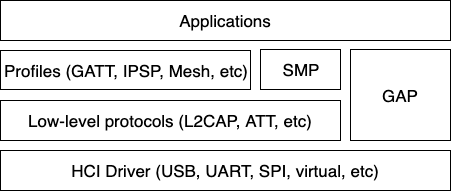
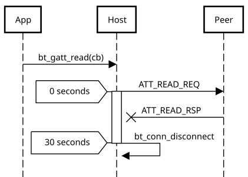

LE Host
The Bluetooth Host implements all the higher-level protocols and profiles, and most importantly, provides a high-level API for applications. The following diagram depicts the main protocol & profile layers of the host.

Bluetooth Host protocol & profile layers.
Lowest down in the host stack sits a so-called HCI driver, which is responsible for abstracting away the details of the HCI transport. It provides a basic API for delivering data from the controller to the host, and vice-versa.
Perhaps the most important block above the HCI handling is the Generic Access Profile (GAP). GAP simplifies Bluetooth LE access by defining four distinct roles of Bluetooth usage:
Connection-oriented roles
Peripheral (e.g. a smart sensor, often with a limited user interface)
Central (typically a mobile phone or a PC)
Connection-less roles
Broadcaster (sending out Bluetooth LE advertisements, e.g. a smart beacon)
Observer (scanning for Bluetooth LE advertisements)
Each role comes with its own build-time configuration option:
CONFIG_BT_PERIPHERAL, CONFIG_BT_CENTRAL,
CONFIG_BT_BROADCASTER & CONFIG_BT_OBSERVER. Of the
connection-oriented roles central implicitly enables observer role, and
peripheral implicitly enables broadcaster role. Usually the first step
when creating an application is to decide which roles are needed and go
from there. Bluetooth Mesh is a slightly special case, requiring at
least the observer and broadcaster roles, and possibly also the
Peripheral role. This will be described in more detail in a later
section.
Peripheral role
Most Zephyr-based Bluetooth LE devices will most likely be peripheral-role
devices. This means that they perform connectable advertising and expose
one or more GATT services. After registering services using the
bt_gatt_service_register() API the application will typically
start connectable advertising using the bt_le_adv_start() API.
There are several peripheral sample applications available in the tree, such as samples/bluetooth/peripheral_hr.
Central role
Central role may not be as common for Zephyr-based devices as peripheral role, but it is still a plausible one and equally well supported in Zephyr. Rather than accepting connections from other devices a central role device will scan for available peripheral device and choose one to connect to. Once connected, a central will typically act as a GATT client, first performing discovery of available services and then accessing one or more supported services.
To initially discover a device to connect to the application will likely
use the bt_le_scan_start() API, wait for an appropriate device
to be found (using the scan callback), stop scanning using
bt_le_scan_stop() and then connect to the device using
bt_conn_le_create().
There are some sample applications for the central role available in the tree, such as samples/bluetooth/central_hr.
Observer role
An observer role device will use the bt_le_scan_start() API to
scan for device, but it will not connect to any of them. Instead it will
simply utilize the advertising data of found devices, combining it
optionally with the received signal strength (RSSI).
Broadcaster role
A broadcaster role device will use the bt_le_adv_start() API to
advertise specific advertising data, but the type of advertising will be
non-connectable, i.e. other device will not be able to connect to it.
Connections
Connection handling and the related APIs can be found in the Connection Management section.
Security
To achieve a secure relationship between two Bluetooth devices a process
called pairing is used. This process can either be triggered implicitly
through the security properties of GATT services, or explicitly using
the bt_conn_set_security() API on a connection object.
To achieve a higher security level, and protect against
Man-In-The-Middle (MITM) attacks, it is recommended to use some
out-of-band channel during the pairing. If the devices have a sufficient
user interface this “channel” is the user itself. The capabilities of
the device are registered using the bt_conn_auth_cb_register()
API. The bt_conn_auth_cb struct that’s passed to this API has
a set of optional callbacks that can be used during the pairing - if the
device lacks some feature the corresponding callback may be set to NULL.
For example, if the device does not have an input method but does have a
display, the passkey_entry and passkey_confirm callbacks would
be set to NULL, but the passkey_display would be set to a callback
capable of displaying a passkey to the user.
Depending on the local and remote security requirements & capabilities, there are four possible security levels that can be reached:
BT_SECURITY_L1No encryption and no authentication.
BT_SECURITY_L2Encryption but no authentication (no MITM protection).
BT_SECURITY_L3Encryption and authentication using the legacy pairing method from Bluetooth 4.0 and 4.1.
BT_SECURITY_L4Encryption and authentication using the LE Secure Connections feature available since Bluetooth 4.2.
Note
Mesh has its own security solution through a process called provisioning. It follows a similar procedure as pairing, but is done using separate mesh-specific APIs.
L2CAP
L2CAP stands for the Logical Link Control and Adaptation Protocol. It is a common layer for all communication over Bluetooth connections, however an application comes in direct contact with it only when using it in the so-called Connection-oriented Channels (CoC) mode. More information on this can be found in the L2CAP API section.
Terminology
The definitions are from the Core Specification version 5.4, volume 3, part A 1.4.
Term |
Description |
|---|---|
Upper layer |
Layer above L2CAP, it exchanges data in form of SDUs. It may be an application or a higher level protocol. |
Lower layer |
Layer below L2CAP, it exchanges data in form of PDUs (or fragments). It is usually the HCI. |
Service Data Unit (SDU) |
Packet of data that L2CAP exchanges with the upper layer. This term is relevant only in Enhanced Retransmission mode, Streaming mode, Retransmission mode and Flow Control Mode, not in Basic L2CAP mode. |
Protocol Data Unit (PDU) |
Packet of data containing L2CAP data. PDUs always start with Basic L2CAP header. Types of PDUs for LE: B-frames and K-frames. Types of PDUs for BR/EDR: I-frames, S-frames, C-frames and G-frames. |
Maximum Transmission Unit (MTU) |
Maximum size of an SDU that the upper layer is capable of accepting. |
Maximum Payload Size (MPS) |
Maximum payload size that the L2CAP layer is capable of accepting. In Basic L2CAP mode, the MTU size is equal to MPS. In credit-based channels without segmentation, the MTU is MPS minus 2. |
Basic L2CAP header |
Present at the beginning of each PDU. It contains two fields, the PDU length and the Channel Identifier (CID). |
PDU Types
B-frame: Basic information frame
PDU used in Basic L2CAP mode. It contains the payload received from the upper layer or delivered to the upper layer as its payload.
{kind=link}
K-frame: Credit-based frame
PDU used in LE Credit Based Flow Control mode and Enhanced Credit Based Flow Control mode. It contains a SDU segment and additional protocol information.
{kind=link}
{kind=link}
Relevant Kconfig
Kconfig symbol |
Description |
|---|---|
Represents the MPS |
|
Represents the L2CAP MTU |
|
Enables LE Credit Based Flow Control and thus the stack may use K-frame PDUs |
GATT
The Generic Attribute Profile is the most common means of communication over LE connections. A more detailed description of this layer and the API reference can be found in the GATT API reference section.
ATT timeout
If the peer device does not respond to an ATT request (such as read or write) within the ATT timeout, the host will automatically initiate a disconnect. This simplifies error handling by reducing rare failure conditions to a common disconnection, allowing developers to manage unexpected disconnects without special cases for ATT timeouts.

Mesh
Mesh is a little bit special when it comes to the needed GAP roles. By default, mesh requires both observer and broadcaster role to be enabled. If the optional GATT Proxy feature is desired, then peripheral role should also be enabled.
The API reference for mesh can be found in the Mesh API reference section.
LE Audio
The LE audio is a set of profiles and services that utilizes GATT and Isochronous Channel to provide audio over Bluetooth Low Energy. The architecture and API references can be found in Bluetooth Audio Architecture.
Persistent storage
The Bluetooth host stack uses the settings subsystem to implement persistent storage to flash. This requires the presence of a flash driver and a designated “storage” partition on flash. A typical set of configuration options needed will look something like the following:
CONFIG_BT_SETTINGS=y CONFIG_FLASH=y CONFIG_FLASH_PAGE_LAYOUT=y CONFIG_FLASH_MAP=y CONFIG_NVS=y CONFIG_SETTINGS=y
Once enabled, it is the responsibility of the application to call
settings_load() after having initialized Bluetooth (using the
bt_enable() API).